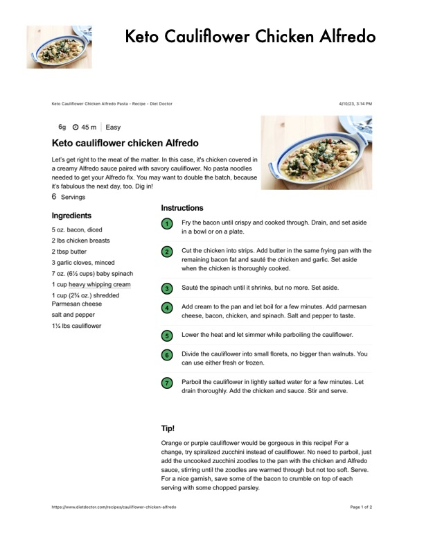

Keto Cauliflower Chicken Alfredo

Original cookbook page 450
Ingredients
- 5 oz. bacon, diced
- 2 lbs chicken breasts
- 2 tbsp butter
- 3 garlic cloves, minced
- 7 oz. (6% cups) baby spinach
- 1 cup heavy whipping cream
- 1 cup (2% oz.) shredded
- Parmesan cheese
- salt and pepper
- 1% Ibs cauliflower
Instructions
- Fry the bacon until crispy and cooked through. in a bowl or on a plate. Cut the chicken into strips. Add butter in the sz remaining bacon fat and sauté the chicken anc when the chicken is thoroughly cooked. Sauté the spinach until it shrinks, but no more. Add cream to the pan and let boil for a few mir cheese, bacon, chicken, and spinach. Salt anc Lower the heat and let simmer while parboiling Divide the cauliflower into small florets, no bigs can use either fresh or frozen. Parboil the cauliflower in lightly salted water fo drain thoroughly. Add the chicken and sauce. : Orange or purple cauliflower would be gorgeous in thi change, try spiralized zucchini instead of cauliflower. I add the uncooked zucchini zoodles to the pan with the sauce, stirring until the zoodles are warmed through b For a nice garnish, save some of the bacon to crumbl
Recipe #450 from collection